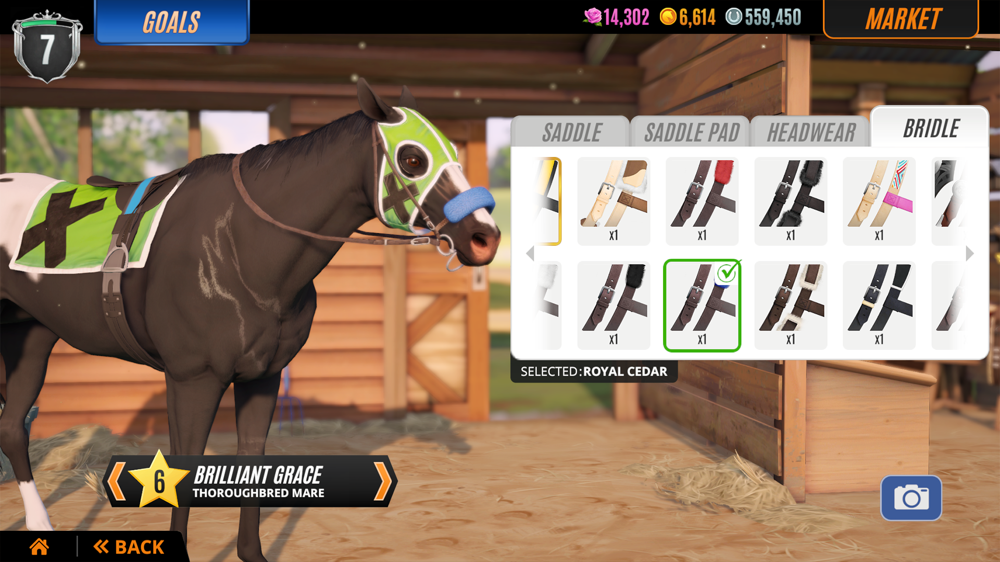
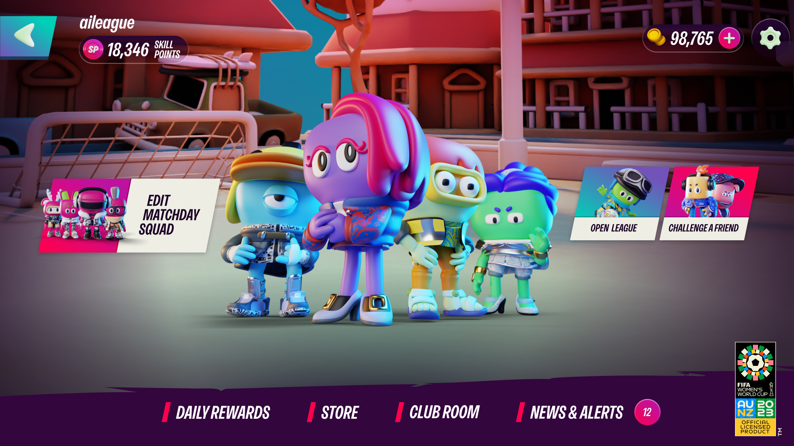
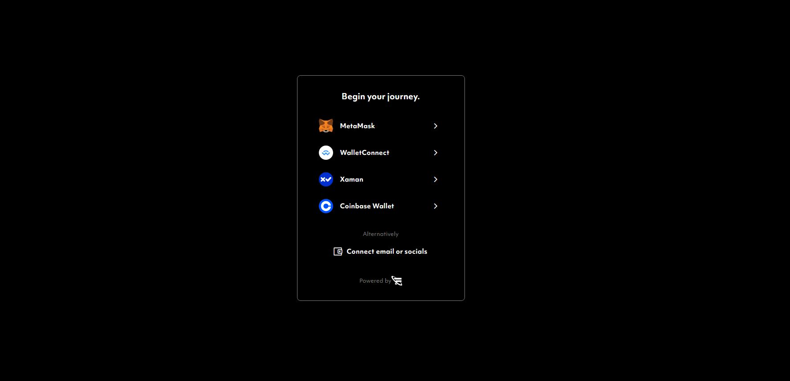
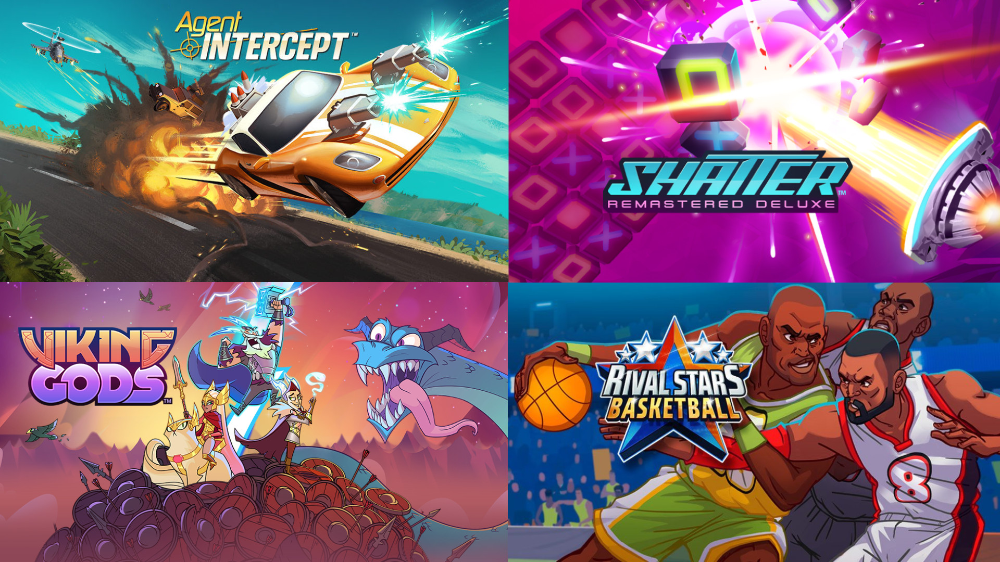
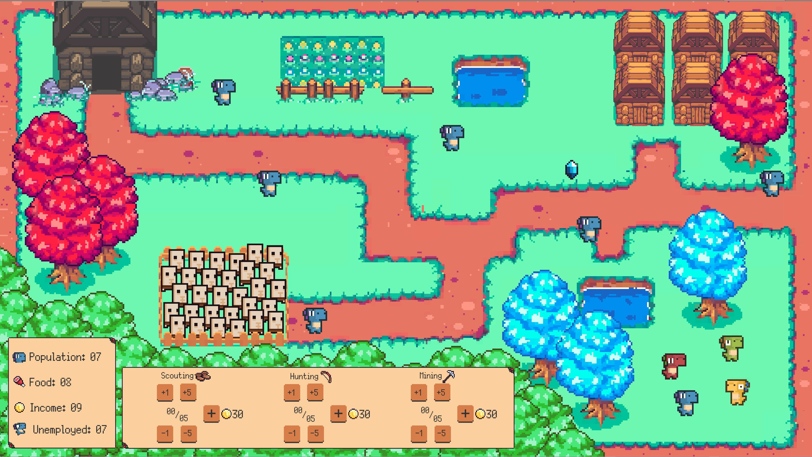

// Industry Projects //
// Rival Stars Horse Racing //

Rival Stars Horse Racing is a horse breeding and racing game for mobile and pc. I helped develop one new game mode and an expansion to an existing game mode along with a myriad of minor updates and quality-of-life changes.
Skills learned:
-Agile development
-Scrum
-Iterating game difficulty
-User testing,
-Figma prototyping
-Jira tracking
-Writing and maintaining test documentation
// FIFA World Cup AI League //

FIFA World Cup is a soccer team management game with AI actors. During this project, I worked on getting the game ready to end production which involved testing and helping curate the
rewards and payloads for a series of 15 live events that would need to run and be working long after we had stopped working on the project.
Skills learned:
-Setting up and testing delayed payloads
-How to curate an event for several players
-How to test with minimal control over gameplay
-Organizing satisfying player rewards
// Futurepass //

Futurepass is a digital wallet used to keep track of your web3 assets. On this project, I spent a lot of time managing my time with the frontend team and backend team and ensuring proper priority management.
Skills learned:
-Web3 asset/wallet management
-Web app development/testing
-How to use web3 wallet software (meta mask, coinbase, xaman)
// Core QA //

During my time at PikPok I lent a helping hand on several projects as they needed more QA resources. During this time I worked on several titles mainly helping do group tests or drilling into specific platform builds.
These projects were Agent Intercept, Shatter Remastered, Viking Gods, Rival Stars Basketball, and Four Letters.
Skills learned:
-Following written instructions
-Adapting to new workflows
-Changing task rapidly
// Other Projects //
// Game jam 2019 //

I made a game with two other students during an NZ game jam over two days with the theme of chain reaction. The game is a management sim in which you need to control your population of dinosaurs
to help your tribe prosper. On this game, I was a programmer and designer handling the spreadsheet of chances for random events and tweaking the rate at which recourses changed and scaled with
the player's population.
check out the game here
Skills learned:
-Really hard to make a management sim in 2 days
-Time managment
-Application of designs to a practical situation
-Rapid iteration
// FESTiMALS //
FESTiMALS is a multiplayer party game similar to mario party except you play opposite each other on a single tablet. FESTIMALS had the aim of getting children and parents to play a game together.
This was my final university project. I produced the project and did programming. I managed a team of 5 students to help produce 4 mini-games and have the game be playable on several mobile devices.
Skills learned:
-People and time management
-User testing
-Taking and giving feedback constructively
-Building games in unity
-Knowing your audience and how it affects your games play
// Flourish - Te Papa //
Flourish was developed as part of my second year of university working with the external client of Te-Papa to make a children's game for touchscreens. I was a programmer on this project as well as a meeting facilitator during out meetings with Te-Papa.
Skill learned:
-Working to external requirements
-Working with wider teams with defined roles
-Github and version-based work
-Exploring user flows
// Mist Like Game //
Myst-like game was the first project I took from start to finish during university. This was an exercise in replicating a game genre in unity and focusing on grey boxing to get a completed idea into a playable state as soon as possible.
Skills learned:
-Grey boxing
-Game flow
-Programming
-Unity